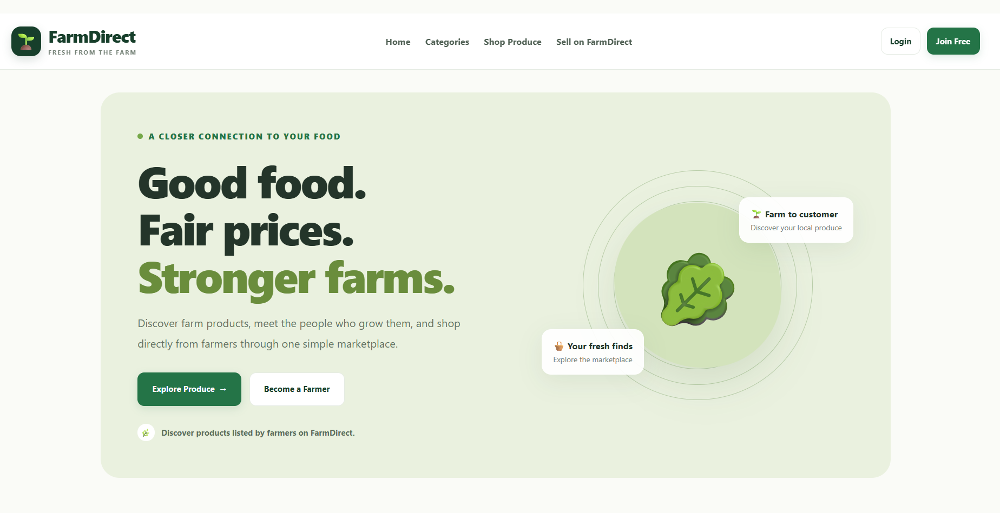
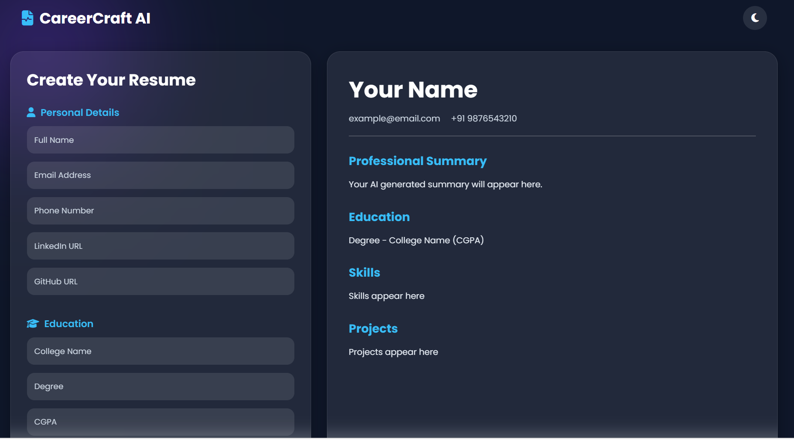
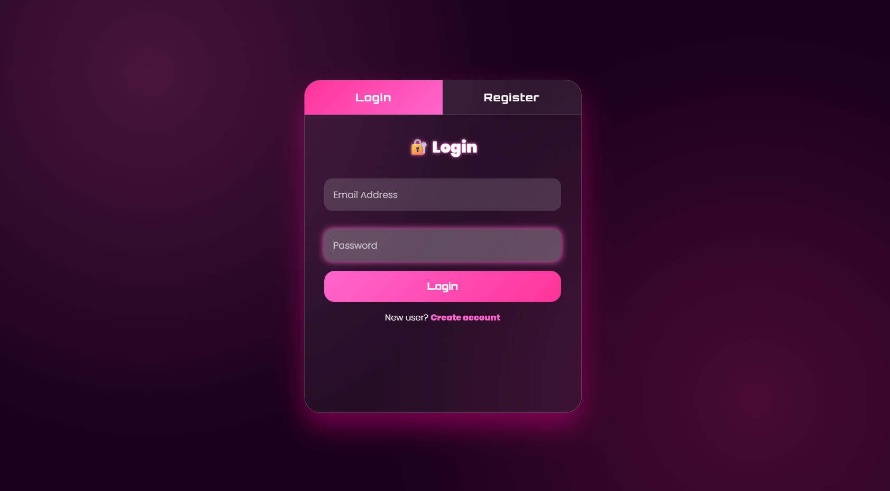

Hello, I'm
Python Developer and Full-Stack Developer with hands-on experience in building web applications using Python, Django, Flask, JavaScript, React.js and MySQL. Passionate about developing practical software solutions and solving real-world problems.
I am a Computer Science Engineering student and aspiring Python Developer with a strong interest in backend development and full-stack web development. I have hands-on experience building web applications using Python, Django, Flask, JavaScript, React.js and MySQL.
I have developed practical projects, including FarmDirect, a farmer-to-customer e-commerce platform, and CareerCraft AI, an AI-powered resume builder. I also gained professional development experience through my Software Engineering Internship at DIGISAMAKSH Private Limited.
I enjoy learning new technologies, solving programming problems and building efficient applications that solve real-world challenges. I am looking for opportunities to grow as a Python Developer or Full-Stack Developer.

Developed a full-stack e-commerce platform that connects farmers directly with customers, helping farmers sell agricultural products without unnecessary intermediaries.
Implemented user authentication, farmer and customer dashboards, product management, product search, shopping cart, checkout and order management.
Technologies: Python, Django, MySQL, HTML, CSS, JavaScript.

Developed an AI-powered resume builder and ATS optimization platform designed to help job seekers create professional resumes and improve their job application preparation.
Technologies: AI Integration, Web Development and JavaScript.

Developed a centralized Software Defined Networking solution for Industrial IoT environments with routing optimization and performance analysis.
Technologies: Python, Flask, SQLite and Matplotlib.
June 2026 - August 2026 | 3 Months
Worked with the Technology and Development team, gaining practical experience in software engineering and full-stack web development.
Completed practical training in Full Stack Development, covering frontend and backend technologies along with AI-powered development tools.
Analyzed business datasets, created interactive Tableau dashboards and performed Excel-based data analysis to generate meaningful business insights.
Vaagdevi Engineering College
2023 - 2027 | CGPA: 8.58